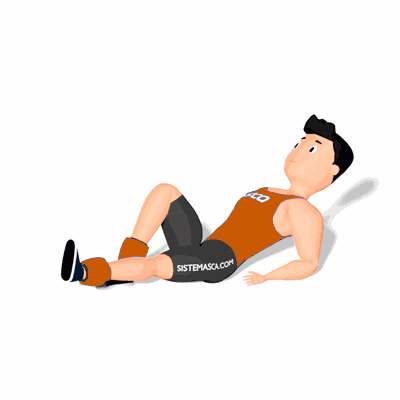

Flexão de Quadril com Caneleira

O exercício tem como objetivo o fortalecimento e hipertrofia dos músculos do abdômen e quadríceps.
Ficha Técnica
Tipo: Funcional
Grupo Muscular: Abdome
Aparelho: Nenhum
Músculos: Nenhum
Como realizar
- Coloque uma caneleira em cada perna na região do tornozelo;
- Deite sobre o colchonete com barriga para cima;
- Mantenha uma das pernas com o joelho flexionado;
- Com a outra perna realize a flexão do quadril;
- Ao terminar as repetições, realize os movimentos com a outra perna.
 RC STORE
RC STORE